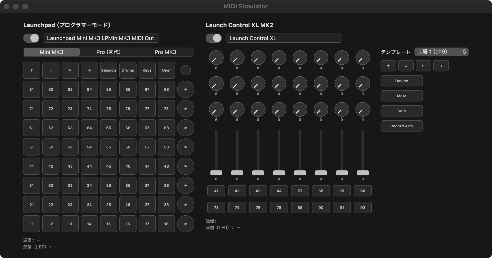

MIDISimulator
実機が無くても、MIDI Learn を進められる。
Launchpad と Launch Control XL MK2 を画面上で再現し、実機と同じ MIDI を、実機と同じ名前の仮想の機器から送る Mac のアプリ。
MIDI Learn without the hardware.
A Mac app that recreates Launchpad and Launch Control XL MK2 on screen and sends the same MIDI as the real thing, from virtual devices with the same names.

4つの機種を、
実機と同じ名前で
Four devices,
with their real names
起動すると、2台分の仮想の機器がすぐに現れます。IAC ドライバなどの設定は要りません。Launchpad は画面の上で機種を切り替えられます。
Launch it and two virtual devices appear right away — no IAC Driver setup. Switch the Launchpad model at the top of the window.
- ボタン・パッドは押している間だけ押したまま
- ノブとフェーダーは上下にドラッグ
- ポート名は書き換えて、手元の実機に合わせられる
- Buttons and pads stay down while you hold them
- Drag knobs and faders up and down
- Rename ports to match your own hardware
Launchpad Mini MK3 LPMiniMK3 MIDI OutLaunchpad Pro Standalone PortLaunchpad Pro MK3 LPProMK3 MIDI OutLaunch Control XL返ってきた LED も、
画面の色で分かる
See the LEDs your app
sends back
相手のアプリが返す LED の信号を受け取って、ボタンの色に映します。点灯・点滅・明滅も見分けられます。最後に送った信号と受け取った信号は、パネルの下に出ます。
LED messages from your app light up the buttons on screen — solid, flashing or pulsing. The last message sent and received is shown under each panel.
ページの上での再現です。パッドを押すと、送る信号と、相手のアプリが返す LED の例を表示します。
A simulation in your browser. Press a pad to see the message sent and an example LED reply.
覚えさせた割り当てが、
そのまま実機でも
Mappings you learn
carry over to the real device
仮想の機器は実機と同じポート名なので、機器の名前で割り当てを見分けるアプリなら、ここで覚えさせた割り当てが実機でもそのまま効きます。実機を使うときは、スイッチで仮想の機器を切っておきます。
The virtual devices use the same port names as the hardware, so apps that tell devices apart by name keep your mappings when you plug in the real thing. Switch the virtual device off when you use the hardware.
動作環境
Requirements
- OS
- macOS 15 Sequoia 以降
- Mac
- Apple シリコン搭載の Mac
- 価格
- 無料
- 入手
- GitHub のリリース
- OS
- macOS 15 Sequoia or later
- Mac
- A Mac with Apple silicon
- Price
- Free
- Get it
- GitHub Releases